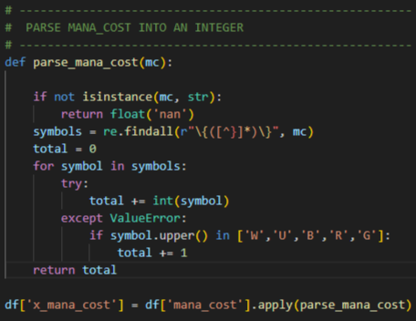

Magic: The Gathering has evolved significantly since its inception, with new mechanics and card designs introduced over time. A key concern in the MTG community is the concept of "power creep," where newer cards become stronger, potentially unbalancing the game. This project aims to analyze and compare Commander sets from 2011 and 2024 to determine if power creep is evident. By understanding these trends, we can see how gameplay and strategies have shifted over time.
The main problem I am trying to solve is whether the evolution of card design in Magic: The Gathering has led to significant power creep. I aim to answer questions such as: Has the average power and toughness of creatures increased? Are newer cards more cost-efficient in terms of mana? Which colors have benefited the most from new mechanics? This project seeks to provide data-driven insights into how the Commander format has changed over time.
The dataset consists of two Commander sets:
The data was sourced from MTGJSON, which provides comprehensive datasets for all Magic: The Gathering cards. The dataset includes features such as card type, rarity, mana cost, power, toughness, and special abilities. These features help in analyzing card efficiency, power scaling, and game mechanics across different years.
Before diving into the analysis, I had to clean and preprocess the data to make it usable. This involved handling missing values, converting mana costs and power levels into numeric formats, and filtering out cards with unrealistic stats. The mana costs were especially tricky since they use both numbers and symbols, which required custom code to parse correctly. Without this preprocessing step, the analysis would have been inaccurate and messy.
To better understand the data, I created scatter plots comparing the mana cost and power of cards from 2011 and 2024. This visualization helps identify trends in card efficiency and power scaling. While exploring the data, I noticed that creatures from 2024 tend to have higher power for the same mana cost compared to 2011. This suggests a shift towards more aggressive and cost-efficient cards. Additionally, the data revealed an increase in complex mechanics in newer sets, reflecting changes in game design philosophy.
Through this analysis, I've learned that Magic: The Gathering has indeed experienced power creep over the years. The data shows that newer cards are generally stronger and more efficient, with enhanced abilities and lower mana costs. This trend impacts deck-building strategies, pushing players to favor newer cards for competitive play. The visualizations tell a story of a game that has evolved to keep up with player expectations and market demands. By answering the initial questions, this project provides insights into the dynamic nature of MTG's card design.
This project highlights how data analysis can reveal interesting trends in games like Magic: The Gathering. By comparing sets from different years, we can see how card design has evolved, affecting gameplay and strategy. Understanding these changes helps players adapt to new environments and optimize their decks. It also shows how data can provide insights beyond just numbers, telling a story about the game's history and growth. This kind of analysis is not just useful for gaming but also for making informed decisions in other fields.
The `parse_mana_cost` function takes the mana cost from a Magic: The Gathering card and turns it into a number that’s easier to work with. It looks for all the symbols inside curly braces `{}` and adds them up, counting regular numbers as-is and colored mana symbols like `W`, `U`, `B`, `R`, and `G` as 1 each. If the card doesn’t have a mana cost, it just returns `NaN`, which basically means there’s no value.
Download All Magic: The Gathering Card Sets